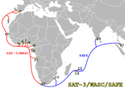

L’île de la Réunion est une île au beau milieu de l’Océan Indien et cela signifie qu’elle est très isolée. Le bateau a pendant longtemps été le seul moyen de connecter les réunionnais au reste du monde. Aujourd’hui, l’avion, le téléphone et Internet sont d’autres moyens mais l’éloignement rend leur utilisation plus laborieuse et plus coûteuse. Depuis 7 ans les offres des fournisseurs d’accès Internet ont fortement évolué mais tout ceci a été rendu possible grâce à de nombreux travaux d’aménagement effectués dans le secret. Les voici ici expliqués.
Avant, les connexions Internet des réunionnais utilisaient leurs liaisons téléphoniques et les données étaient acheminées à France Métropolitaine par une liaison satellite. Coûteuse et peu adaptée, cette liaison a vite montré ses limites, offrant aux réunionnais des bas débits à très cher.
 Les choses ont quelque peu changé en 2002, année de l’ouverture du cable SAFE. Ce câble de liaison sous-marin a été inauguré en juin 2002, reliant l’Europe à plusieurs pays africains de l’ouest avant de rejoindre l’Inde en passant par l’île de la Réunion et Maurice. L’île est enfin rattachée directement à l’Internet mondial. Un progrès permettant entre autre l’explosion des abonnements ADSL à la Réunion. Mais les abonnements restent quand même plus chers qu’en France hexagonale où plusieurs câbles transatlantiques et liaisons trans-européennes assurent une concurrence accrue et une bonne connectivité.
France Telecom est l’opérateur du câble SAFE ainsi que de la liaison satellite avec Paris. Les opérateurs de la Réunion n’ont pas de choix que de passer par cette société pour assurer son transit international. La société profite donc de son monopole pour pratiquer des prix lui assurant des revenus confortables. Rappelons aussi que SAFE est le seul câble sous-marin qui dessert l’Afrique et qu’aucune Telco (Les grosses compagnies de Télécoms) n’est encore intéressé pour investir sur ce continent. L’éloignement de la Réunion n’incite pas non plus à investir en sa direction. Il faut donc que les pouvoirs publics encouragent les nouveaux projets de câbles sous-marins. Et c’est ce qui se fait.
{% Image page, "East-African-Marine-Cable-au-Kenya.webp", "Un jeune Kenyan regarde le câble optique East African Marine Cable (TEAMS) apporté par le bateau Niwa au large de Mombasa."%}
Photo: © REUTERS/Joseph Okanga
Un deuxième câble sous-marin, EASSy, est en train d’être posé en Afrique pour relier l’est du continent et la péninsule arabique. Ce dernier devrait assurer le transit pour Madagascar, à une proximité relative de l’île française de l’Océan Indien. L’ouverture EASSy prends du retard suite à de problème de financement et l’inauguration a été repoussée au second semestre 2009. À cette date, un autre câble devrait être mis en service entre l’Afrique du Sud et l’Europe: Seacom. Pour ces deux projets, ni la Réunion ni Maurice n’ont semblé intéressés pour demander le prolongement de ce câble vers leurs territoires. Occasion manquée ? Pas sûr puisque La Région Réunion et Madagascar, alors que EASSy n’est pas encore en service (l’ouverture a été repoussée au second semestre 2009) étudient la mise en place d’un câble reliant la petite île à la grande. Une sorte de barreau de transit reliant SAFE à EASSy en sécurisant la connectivité internationale des deux îles. Le projet s’appelle RAVENAL du nom malgache de l’arbre du voyageur (une espèce malgache qui est aujourd’hui présente partout dans le monde). Il n’en est qu’à l’appel à manifestation d’intérêt. Les pouvoirs publics en sont seulement à sonder les opérateurs pour voir ce qu’ils en pensent. Il reste encore à rédiger l’appel d’offre pour pouvoir passer le marché et enfin réaliser cette nouvelle liaison entre la Réunion et ailleurs.
La Réunion est une île certes, mais elle ne se veut pas coupée du monde.